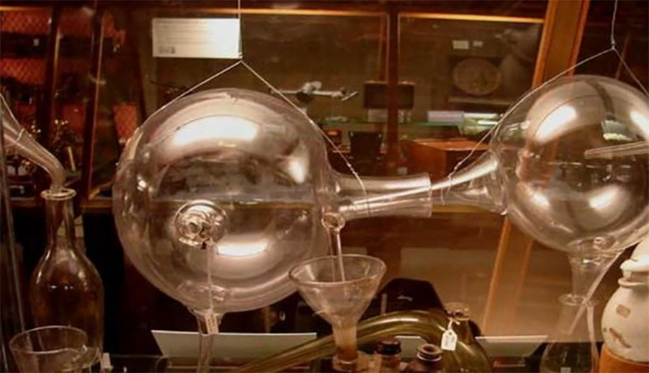

Two New Studies Destroy Climate Crisis, Greenhouse Gas & Carbon Claims
Written by John O'Sullivan

It’s official: the greenhouse gas theory and the litany of fake science claims it spawned about carbon dioxide climate forcing suffer two hammer blows in the peer-reviewed literature.
Shrewdly relying only on accepted chemistry and physics plus official data from the UN’s Intergovernmental Panel on Climate Change (IPCC), experts from the ‘hard’ sciences present two new papers offering an objective appraisal of the science argued over in the politicized global warming debate.
With the first paper addressing the greenhouse gas theory of climate and the second paper dissecting the alleged role of carbon dioxide, these peer-reviewed studies throw cold water on the purported ‘settled science.’
First Paper Demolishes Greenhouse Gas Claims
Set out in ‘Role of greenhouse gases in climate change‘ (local copy) the first of the two papers from the Sage Energy & Environment Journal demolishes the most quoted descriptions of the greenhouse gas theory. [1]
Identifying and dismantling the six key pseudo scientific claims woven into the ‘settled science’ the authors refute the following:
(a) radiation trapped between the Earth’s surface and its atmosphere;
(b) the insulating blanket of the atmosphere that keeps the Earth warm;
(c) back radiation from the atmosphere to the Earth’s surface;
(d) Infra Red absorbing gases that hinder radiative cooling and keep the surface warmer than it would otherwise be – known as ‘otherwise radiation’;
(e) differences between actual surface temperatures of the Earth (as also observed on Venus) and those based on calculations;
(f) any gas that absorbs infrared radiation emitted from the Earth’s surface towards free space. It is shown that none of the above descriptions can withstand the rigours of scientific scrutiny when the fundamental laws of physics and thermodynamics are applied to them.
The authors, who are experts trained in higher-level physics and chemistry, painstakingly apply a fresh eye to the convoluted and often contradictory assertions made by ill-trained researchers in the infant science of climate studies. It was discovered that due to deficiencies in understanding of the tougher concepts of thermodynamics, the poorly-trained generalists within the tight-knit climate community had overly relied on 19th century half-baked and simplistic interpretations.
Specifically, the authors identify how certain key historic figures from the Victorian era – the originators of the greenhouse gas theory – held an obsession for fanciful ideas that carbon dioxide (CO2) operates within ‘fixed air’ and oxygen was ‘dephlogisticated air.’
Those originators of the greenhouse gas hypothesis were firm promoters of the phlogiston theory – a concept even more firmly debunked by modern science and the later laws of thermodynamics. Both hypotheses went hand in hand and relied on each other.
While those misconceptions about the nature of gases was abandoned by modern science, the mechanism from the ‘greenhouse’ analogy became strangely re-born in the 1970’s when it was seen to be a useful fit for a political agenda.
Certainly, those nineteenth-century greenhouse gas/phologiston believers earnestly performed laboratory experiments in labelled flasks and containers of gases, liquids and solids. As the author’s noted:
“An added difficulty is that so far no way has been found to be able to readily transpose or correlate experiments conducted in the contained, static, isothermal and isobaric conditions of a laboratory to the great vastness of earth’s atmosphere.“
In short, it appears the very barrier of the lab’s glass containers themselves was inadvertently misappropriated within the mechanism of a supposed ‘greenhouse’ atmosphere. That is, they imagined a glass-like barrier applied to the earth’s open atmosphere. We know today that our atmosphere is an ‘open system’ merging gradually into the vacuum void of outer space, unlike the closed system of a lab flask or any glass-pane greenhouse.
The limits of their laboratory apparatus combined with their obsession with the later discredited phlogiston concept – set alongside the fact their ideas pre-dated the foundation of the laws of thermodynamics – led those Victorians to their ‘greenhouse’ errors.
Second Paper Demolishes Carbon Dioxide Claims
The second damning paper is ‘Role of atmospheric carbon dioxide in climate change‘ (local copy) and similarly analyses official data and claims before eviscerating them. [2]
Sensibly, the authors begin by citing a wealth of non-controversial and official data concerning what is known and accepted about carbon dioxide. The data examined includes:
(a) Vostok ice-core measurements;
(b) accumulation of CO2 in the atmosphere;
(c) studies of temperature changes that precede CO2 changes;
(d) global temperature trends;
(e) current ratio of carbon isotopes in the atmosphere;
(f) satellite data for the geographic distribution of atmospheric CO2;
(g) effect of solar activity on cosmic rays and cloud cover.
The authors find that:
“Nothing in the data supports the supposition that atmospheric CO2 is a driver of weather or climate, or that human emissions control atmospheric CO2.”
Both papers are likely to be relied upon by other experts from the ‘hard’ sciences who have for years doubted the far-fetched and unphysical claims made in the fledgling climate science community.
A great many physicists, chemical scientists, geologists and mathematicians have long doubted the claims made premised on dubious parameters fed into government computer models. They will be emboldened further to speak against the cherry-picked alarmist narrative by these two new papers.
As the authors conclude in the second paper:
“As demonstrated, empirical evidence does not support the claim that anthropogenic CO2 emissions cause global warming and/or climate change. We suggest that without adequately proven evidence being demonstrated – should it exist in the first place – such a conclusion can not be adduced from the known facts. “
[1] http://principia-scientific.org/publications/Role_of_GHE-EaE.pdf (local copy)
[2] http://principia-scientific.org/publications/Role_of_CO2-EaE.pdf (local copy)
Jim McGinn
| #
Humans are delusional about H2O. And this delusion results in the following: 1) humans generally believe that H2O is simple and obvious and, 2) humans believe that our understanding of H2O is comprehensive and accurate, both in science and in genera. The reality is that neither of these are true. Neither of these is remotely true. H2O is extremely complex and poorly understood by science. Currently there exists over 70 anomalies of H2O. That is 70 different observations about H2O (under various conditions) that are inconsistent with or completely unpredicted by theory. However, human delusion runs so deep that the meaning of anomaly has been altered in the context of H2O to essentially serve as an excuse for why theories of H2O fail to explain what is actually observed.
One consequence of this collective delusion about H2O is that any discoveries that purport to resolve these delusions will go ignored. For example, I made a theoretical breakthrough that allows us to understand the underlying basis of H2O’s anomalies, namely that H2O polarity is not constant but is variable and H bonds are themselves the mechanism underlying this variability. Unfortunately for me, the delusion that H2O is simple, obvious, and well understood runs so deep in human collective consciousness that this breakthrough has been and continues to go unrecognized.
Read this this if you are interested in understanding what is the greatest, unrecognized breakthrough in our understanding of nature:
https://www.thunderbolts.info/forum/phpBB3/viewtopic.php?f=10&t=16582#p117060
James McGinn / Solving Tornadoes
John O'Sullivan
| #
Jim, Within reason we don’t mind you arguing for your pet theories. But posting large numbers of comments not related to the article constitutes spamming. Please show some restraint. Thank you.
Jim McGinn
| #
Jerry:
. . . these condensed phases of matter (liquids or solid) always have a surface, at which surface a water molecule can never be hydrogen-bonded to four other water molecules regardless of their orientation (symmetry?).
JM:
Yes. A surface restricts H bonds. This is the cause of water’s high surface tensions:
[ PSI moderator: please refrain from posting videos – they will be deleted. Thank you ]
Jim McGinn
| #
Hydrogen bonds are categorically distinct from ionic bonds:
[ PSI moderator: please refrain from posting videos – they will be deleted. Thank you ]
Jim McGinn
| #
Why H2O Hydrogen Bonds are distinctive, significant, and poorly understood
[ PSI moderator: please refrain from posting videos – they will be deleted. Thank you ]
Jerry L Krause
| #
Hi Jim and readers,
Yes, the special intermolecular bonding known as hydrogen bonding is the primary intermolecular attraction which gives water (H20) its special properties. It is the interaction between water molecules which cause ice (solid water) to be much less dense than liquid water. This because hydrogen bonding requires a certain directional orientation between the two water molecules involved in forming the ‘hydrogen bond’ between them. And in ice, a given water molecule forms four hydrogen bonds with four other water molecules and these four other water molecules form three other hydrogen bonds with three other water molecules to eventually form a three-dimensional structure in which the water molecules are arranged in the same pattern as the carbon atoms in diamond. The difference being the ‘strength’ of the strong covalent bond between carbon atoms and the weaker hydrogen bonds between water molecules. But these weaker hydrogen bonds of ice are capable of generally preventing the water molecules from any significant rotation which would destroy the necessary directional relationship between adjacent molecules which is required to form the hydrogen bond between adjacent molecules.
Why we (chemists) call this intermolecular interaction hydrogen is that the common isotope of hydrogen is composed of one proton (positive charge) and one electron (negative charge). And the intramolecular bond, termed a covalent bond, which ‘holds’ the hydrogen atom to the oxygen atom we imagine is that the electron of the hydrogen atom is shared with the oxygen atom so that the proton of the hydrogen ‘appears’ bare to the outside world. But the oxygen atom of another water molecule, we imagine, has an unshared pair of electrons which can, if properly orientated, ‘cover’ the nakedness of the hydrogen atom’s exposed proton. So, we consider this interaction termed a hydrogen bond to be much like a weak covalent bond where a pair of the oxygen atom is shared with the ‘nearly bare’ proton of the hydrogen atom.
However, while my attempt to explain hydrogen bonding is different from that of Jim’s video, I do not claim it is better. For I have painted a static picture and Jim was trying to paint a dynamic picture which is the real picture. And this real picture requires a well-practiced imagination.
The Nobel winning chemist, Linus Pauling, wrote (College Chemistry 3rd Ed): “When ice melts, this tetrahedral structure is partially destroyed, and the water molecules are packed more closely together, causing water to have greater density than ice. Many of the hydrogen bonds remain, however, and aggregates of molecules with the open tetrahedral structure persist in water [liquid] at the freezing point. With increase in temperature some of these aggregates break up, causing a further increase in density of the liquid; only at 4C does the normal expansion due to increase in molecular agitation overcome that effect, and cause water to begin to show the usual decrease in density with increasing temperature.”
The key to what Jim wrongly considers, is: “some of these aggregates break up”. Hence, it is clear that Jim considers the possibility that some aggregates might evaporate from liquid water. However, what Jim seems to forget is that temperature is understood to proportional to the average kinetic energy of a particle. Hence, the single molecule, having a greater average velocity than an aggregate of molecules, is most likely to break away from the other molecules, or aggregates, of a liquid or solid.
Have a good day, Jerry
Jim McGinn
| #
Yes, the special intermolecular bonding known as hydrogen bonding is the primary intermolecular attraction which gives water (H20) its special properties.
JM: My improvement to this vague, poorly understood model involves the recognition that H bonds themselves actually neutralize H2O polarity. It is this quirk that underlies the basis of upwards of 70 anomalies of H2O that science has heretofore failed to explain.
It is the interaction between water molecules which cause ice (solid water) to be much less dense than liquid water. This because hydrogen bonding requires a certain directional orientation between the two water molecules involved in forming the ‘hydrogen bond’ between them. And in ice, a given water molecule forms four hydrogen bonds with four other water molecules and these four other water molecules form three other hydrogen bonds with three other water molecules to eventually form a three-dimensional structure in which the water molecules are arranged in the same pattern as the carbon atoms in diamond. The difference being the ‘strength’ of the strong covalent bond between carbon atoms and the weaker hydrogen bonds between water molecules. But these weaker hydrogen bonds of ice are capable of generally preventing the water molecules from any significant rotation which would destroy the necessary directional relationship between adjacent molecules which is required to form the hydrogen bond between adjacent molecules.
JM: The model of of which you speak here was established by Bernal and Fowler in the 1930’s. It’s an idealized model of ice based on an absurd and speculative understanding of H2O molecules magically forming into a lattice structure FOR NO PHYSICAL REASON THAT ANYB0DY HAS BEEN ABLE TO DETERMINE. Their idealized model has never been confirmed empirically and if it actually did occur in nature ice would float a lot higher over the surface than it currently does.
. . . this real picture requires a well-practiced imagination.
JM: Yep. Or, as Feynman said, nature’s imagination is much greater than that of man.
The Nobel winning chemist, Linus Pauling, wrote (College Chemistry 3rd Ed): “When ice melts, this tetrahedral structure is partially destroyed,
JM: Pauling was clueless. A genuine tetrahedral structure neutralizes ALL polarity. Because a tetrahedral structure achieves perfect symmetry. Polarity requires asymmetry (lopsidedness). Liquid water is more highly tetrahedral than ice (this minimizes polarity, thus describing why liquid water is so fluid). Ice involve mechanical factors that force a breaking of the tetrahedral structure that is in liquid water. Pauling had it exactly backwards.
. . . temperature is understood to proportional to the average kinetic energy of a particle.
JM: This is a dumbass assumption, misapplied to H2O. Use your brain. Understand H2O polarity for what it is. Don’t just believe because a Nobel prize winner made a statement.
Hence, the single molecule, having a greater average velocity than an aggregate of molecules, is most likely to break away from the other molecules, or aggregates, of a liquid or solid.
JM: This exemplifies the stupidity of basing your conclusions about water on what most molecules will do. Water is unique in that polarity returns with the breaking of symmetry. Ice involves breaking of tetrahedral symmetry–exactly the opposite of what the current, brain-dead, paradigm assumes.
Jerry L Krause
| #
Hi Jim and Readers,
Another important issue with regards to the process we termed evaporation of water molecules from the water’s liquid surface, or the sublimation of water molecules from the water’s solid surface (ice). It is that these condensed phases of matter (liquids or solid) always have a surface, at which surface a water molecule can never be hydrogen-bonded to four other water molecules regardless of their orientation (symmetry?). Gaseous matter, which we commonly consider the atmosphere to be, never has a surface unless it is the surface of liquid or solid matter. Hence, atmospheric molecules, being generally prevented from escaping to space by the earth’s gravity, can be considered to have no surface.
Ponder these generally accepted considerations.
Have a good day, Jerry
Pierre R Latour
| #
Both references to my work 14 & 19 incorrectly attributed to Pierre L.
http://principia-scientific.org/publications/Role_of_GHE-EaE.pdf
My first name is Pierre and last name is Latour.
References should read: Latour PR.
BTW development of eqn (1) assumes plates are black bodies, both have emissivity = absorptivity = 1.
Authors were remiss by not stating that basic assumption of their work.
Therefore conclusions are not necessarily valid when that assumption is not valid.
Absorptivity and emissivity of Earth’s surface and atmosphere 0. (1)
(When I(net) T0. The labels apply to radiator 1 and radiator 0. When I(net) < 0, the transfer is from 0 to 1.
In special cases where Kirchhoff’s Law applies to both radiators: a(0) = e(0) and a(1) = e(1), they can be factored out to give a simplified form
I(net) = σ a(0) a(1) [T(1)4 – T(0)4] = σ e(0) e(1) [T(1)4 – T(0)4] (3)
Of course when applying this simplified version, one must take care that Kirchhoff’s Law applies to both radiators. Otherwise conclusions can be in error.
1. Jack P Holman, “Heat Transfer”, 10th Ed, pg 397 (pdf 422), ex 8-2, q = A1 F12 (Eb1 – Eb2) : http://dl.iranidata.com/book/daneshgahi/%5BJack_P._Holman%5D_Heat_Transfer,_Tenth_Edition_(www.IraniData.com).pdf
2. John H Lienhard IV and John H Lienhard V, “A Heat Transfer Textbook”, 3rd Ed, pg 525, 534 – 536, eqn 10.10 (pdf 537, 546 – 548) : http://k204.ru/books/English/ahttv131.pdf
3. Martin Hertzberg, “The Night Time Radiative Transport Between the Earth’s Surface, Its Atmosphere, and Free Space”, Energy & Environment, V23, n5, 2012, p 821 (pdf 4), eqns 3 & 4. http://climaterealists.com/attachments/ftp/05-Hertzberg.pdf
The authors do not explain how their claim the absorptivity of surface suddenly switches to zero when surroundings begin radiate at a lower temperature.
Probably because there is no physical explanation, it does not occur. It was devised to eliminate any effect of atmospheric properties on its temperatures. In other words the no back radiation conclusion was assumed, not proven.
Pierre R Latour
| #
Should read Absorptivity and emissivity of Earth’s surface and atmosphere less 1.0
Pierre R Latour
| #
Insert: The general radiant energy transfer from radiator 1 to radiator 0 is
I(net) = I1 – I0 > 0. (1)
(When I(net) T0. The labels apply to radiator 1 and radiator 0. When I(net) < 0, the transfer is from 0 to 1.
Pierre R Latour
| #
Sometimes my pastge is not completely accepted.
Insert: (When I(net) T0. The labels apply to radiator 1 and radiator 0. When I(net) < 0, the transfer is from 0 to 1.
Jef Reynen
| #
@Pierre Latour
Why do not give you the correct version of Christiaansen of 1883, which I gave you a month ago. Indeed
I(net) = σ a(0) a(1) [T(1)4 – T(0)4] = σ e(0) e(1) [T(1)4 – T(0)4] (3)
should be written as:
I(net) = σ a(0) a(1) [T(1)4 – T(0)4] = σ a(0) a(1) [T(1)4 – T(0)4] / (a(0)+a(1)-a(0)a(1))
Valid for exchange between two non transparant plates plates with
a(0) = e(0) and a(1) = e(1), representing the relation of Kirchhoff of 1860.
But I agree with you that the paper (the first one) is not of any interest.
But the second one, about the CO2 live time is of great interest.
Peter F Gill
| #
I feel sure that these papers will be regarded as outrageous by many readers. Such people will no doubt consider appropriate actions like sacking the editor and making life difficult for all those on the editorial advisory board – a right bunch of shockers. Better still sack the lot of them even though they all offer their services pro bono publico.
John O'Sullivan
| #
Peter, yes, that would certainly be in keeping with the modus operandi of the rigged alarmist circus.
Jim McGinn
| #
Humans lack the ability to not see what they want to believe.
Climatology is not the only rigged circus in science. Yet we don’t see you drawing attention to the clownishness of meteorology, do we. Why is that?
In another thread on site, we see Bo continually making claims to evidence that supports the rigged circus of meteorology. As has been demonstrated vividly, these claims have no basis in reality. Yet we don’t see you chiming in on that, do we John. Why is that. I’m guessing it is because you want to believe meteorology is a valid science.
You are able to see that climatology is a rigged science because your political belief predispose you to seeing that. People with political beliefs that don’t predispose them to such will not see your arguments as valid or relevant.
As was demonstrated vividly by Ed Bo, humans lack the ability to not see what they want to believe. The silence of yourself and the other politically motivated pretenders on this site will be mirrored in the silence of the public to the claims you have made in this article.
James McGinn / Solving Tornadoes